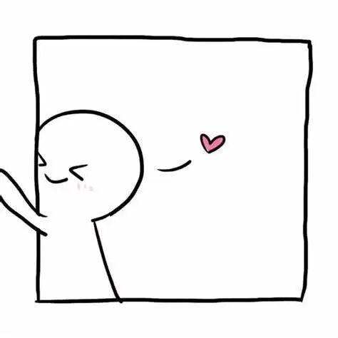

运营专访！运营组大揭秘！

运营组之
----人物专访
运营组是主要负责战队宣传，招商的一个小团体，也是战队中不可或缺的一部分。
他们负责各种活动的组织与策划;
他们负责与赞助商沟通联系；
他们是社交的能手，同时也在幕后默默的付出。
这 就 是 运 营 组！
幕后的他们虽然在工作上严肃，
但他们却是充满着欢乐的团体。

咳咳，话不多说，直接进入正题！
一起来了解一下他们吧！
运营苗力文：因为自己就喜欢新媒体这种工作，电协的氛围也很融洽，所以选择了电协。
运营李现亮：最开始加入电协是因为学长的建议，希望能够加入电协学到一技之长，锻炼自己，之后发现自己对运营组的日常工作非常感兴趣，无论是微信推送，还是PS，PR，海报制作，都是自己非常喜欢且一直想学习的。兴趣是最好的老师，我因此加入运营这个大家庭，并在这里学到了很多东西。
运营徐红：因为运营组可以让我学到很多东西，更重要的是运营组是负责战队的宣传与运营，所以运营组很重要也很有意义。
运营苏洪博：可能真的是情有独钟吧。因为我恰好会一些ps，pr之类的东西，所以当初很自然的就选择了运营组。

运营苗力文：每天在文体都很有趣，尤其是拍大家表情包的时候。
运营徐红：有趣的事大概就是我总忘记一些任务，然后在快到截止时间的时候使劲肝，印象很深刻。
在运营组的时候有没有get到什么新的技能呢？
运营苗力文：学会了ae等一系列软件的应用，抗压能力更强了，也改掉了拖延症。
运营李现亮：在运营我学到了很多，其中最重要的就是时间规划，对于宣传工作一定要有计划，只有这样才不会顾此失彼，才能对自己的工作和目标有清晰的认知，并有条不紊地去完成和实现。
运营徐红：在运营组真的学到了很多，我学会了编辑推送、转发推送、利用pr剪视频。运营组真的超好，强推！！！

运营苗力文：希望大家能踏踏实实干下去！
运营李现亮：运营的工作是长时间且繁琐的，这就需要我们能够静下心，踏实地完成每一次任务。这项工作，说难不难，但时间长了确实累，关键在于我们能否坚持下去，但是，所有的努力，都将在工作完成后化为满足感，让我们看到自己的价值。所以，希望大家能够坚持下去，不断学习，成长，蜕变，最终实现自己最初的目标，成为更好的自己。
运营组的帅气小哥哥，漂亮小姐姐构成的一个温馨小团体，感觉很不错呢！

那这次运营专访就到这里啦！
如果想要了解更多，
欢迎来到文体中心询问！

排版|小苏同学
审核|一只大苗